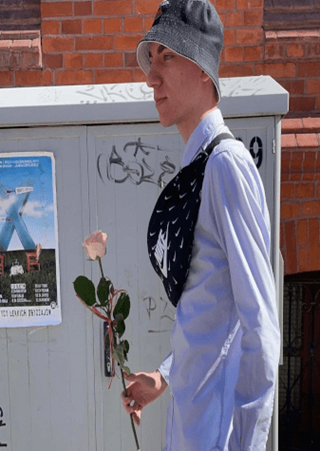

Tymon Martyla
Urodzony w Olsztynie 2 czerwca 2005 roku. Na stałe mieszka w Olsztynie na osiedlu Sznycgenerałów.
Jest niezwykle chudą personą waży zaledwie 33kg, przy 185 cm wzrostu. Jest to spowodowane przez specyficzną chorobe zwaną przez lekarzy
sznycn't. Choroba ta powoduje że w przeciwieństwie do Sznyca chory wogóle nie ma ochoty na jedzenie.

Tymon podczas szkolnego przedstawienia pt. "Łobuz kocha najbardziej".
Osiągnięcia
- Jeden z najlepszych graczy Leauge of Legends w lore sznyca.
- Rekord świata we wciąganiu sznycszczurów.
- Udało mu się wbić D4 zaledwie po 1000 zagranych gier
Ważne wydarzenia
- Budowa igloo
- Niezliczone pilońskie grille.
Ciekawostki
- Gdyby nie kontuzja to grałby z plackami z II ligi polskiej.
- W butach ma specjalny mechanizm, który w momencie zerwania się silnego wiatru wysuwa dwie metalowe kule ważące łącznie 1000kg. Ma to zapobiec porwaniu przez wiatr.